Análise de dados categorizados usando R
2020-03-03
Capítulo 1 Introdução
A ciência de dados Estatística está interessada em discutir e aprender sobre a incerteza de variáveis aleatórias na nossa vida e as suas relações entre si. Em particular, essas variáveis aleatórias podem se apresentar como categorias. São exemplos: o gênero musical que uma pessoa prefere (blues, rock, samba, funk, …); a área de conhecimento que uma pessoa escolhe seguir carreira profissional (Exatas, Humanas, Biológicas); a informação sobre ser favorável a um projeto de governo (Sim, Não); entre diversos outros. A esse tipo de dados denominamos dados categorizados e sobre esse tipo variável aleatória que estamos interessados nessas notas de aula e referente curso.
Durante a apresentação desse material, estaremos interessados em discutir os modelos estatísticos que nos auxiliam a tomar decisões a respeito de hipóteses sobre esse tipo de dados. Também daremos ênfase aos códigos no software R para obtermos esses modelos estatísticos, assim como estaremos interessados nas melhores maneiras de visualizar os resultados.
Esse primeiro capítulo tem o intuito de contextualizar a análise de dados categorizados, apresentando exemplos desse tipo de dados, assim como podemos utilizar o R para visualizar esse tipo de dados. Além disso, também apresentamos as distribuições de probabilidade associadas a esse tipo de variável aleatória. Por fim, discutimos brevemente métodos de inferência para os parâmetros dessa distribuição, apresentando métodos de máxima verossimilhança e também métodos bayesianos.
1.1 Dados categorizados e visualização
Quando observamos dados como categorias, podemos classificar essas variáveis aleatórias como variáveis qualitativas. Essa denominação pode ainda ser dividida entre variáveis aleatórias qualitativas ordinais ou variáveis aleatórias qualitativas nominais. Para o primeiro tipo podemos dizer que existe uma ordem entre as diferentes categorias, enquanto que para a segunda não é possível fazer nenhum tipo de ordenamento que possa ser utilizado na análise dos dados. Por exemplo, faixas de renda (“Menor que 1 salário mín.”, “Entre 1 salário mín. e 2 salários mín.”, …) pode ser ordenada, logo diríamos que é uma variável qualitativa ordinal. Por outro lado, se considerarmos a variável tratamento em um experimento clínico, em que uma pessoa pode fazer do grupo controle ou do grupo tratamento, essas duas possibilidades (“Controle”, “Tratamento”) não permitem nenhuma ordem, logo essa variável aleatória seria denominada variável qualitativa nominal.
Na próxima subseção apresentaremos alguns exemplos de dados categóricos e como podemos visualizar a sua respectiva distribuição usando o software R.
1.1.1 Dados sobre músicas do Raul Seixas no Spotify
Como primeira ilustração, considere os dados que podem ser obtidos sobre a plataforma digital Spotify, a partir de API disponibilizada pelos responsáveis por essa rede social de streaming de músicas. A partir de uma obtenção de uma chave para acesso, é possível baixar diferentes variáveis de diferentes artistas, diferentes álbuns, as quais podem ser utilizadas para análise dos gostos musicais das pessoas, assim como dos diferentes estilos musicais e suas respectivas características, etc. Para essa ilustração consideremos dados do artista Raul Seixas, que é considerado por alguns como um dos precursores do rock no Brasil. Para obtenção de algumas informações pela API disponibilizada pelo Spotify, podemos obter os dados da seguinte maneira. Primeiramente, consideramos os seguintes pacotes, em que o primeiro nos permite o acesso às informações do Spotify de forma mais rápida, enquanto que o segundo nos permite organizar os dados no R de maneira mais ágil, e o terceiro nos possibilita o acesso dos dados da plataforma digital:
Em seguida, consideramos a variável key que deve ser obtida diretamente aqui. Em posse dessa chave de acesso, podemos obter nossas informações de interesse:
# Obtendo a id de identificação do artista
raul_seixas_id <- searchArtist("Raul+Seixas", token = key) %>%
slice(1) %>%
select(id)
# Obtendo o id e o nome de todos os álbuns do artista disponíveis na plataforma
rs_albums <- getAlbums(raul_seixas_id$id, token = key)
# Obtendo para cada um dos álbuns obtidos anteriormente, o id e o nome de
# cada uma das músicas que compõem o álbum.
rs_album_songs <- lapply(rs_albums$id, getAlbum, token = key)
# Obtendo algumas informações adicionais sobre o album.
rs_album_songs_info <- lapply(rs_albums$id, getAlbumInfo, token = key)Em seguida, precisamos obter todas as informações das músicas que queremos analisar. Isso é feita com ajuda das funções lapply, pois precisamos considerar os diferentes id’s dos álbuns e em seguida de cada uma das músicas. O seguinte código pode ser utilizado:
lista_musicas_info <- lapply(rs_album_songs, function(a){
musicas_album_a <- lapply(a$id, getFeatures, token = key)
num_variaveis <- dim(musicas_album_a[[1]])[2]
dados_musicas <- musicas_album_a %>%
unlist() %>%
matrix(ncol = num_variaveis, byrow = TRUE) %>%
as.data.frame()
names(dados_musicas) <- names(musicas_album_a[[1]])
dados_musicas %>%
select(danceability, energy, key, loudness, mode, speechiness,
acousticness, instrumentalness, liveness, valence, tempo,
duration_ms, time_signature) %>%
mutate(nome = a$name)
})
# Empilhando as músicas de todos os albuns em um mesmo banco de dados.
todas_musicas <- do.call(rbind.data.frame, lista_musicas_info)
# Preenchendo os dados com nome do album
todas_musicas$nome_album <- lapply(1:length(rs_album_songs), function(a){
rep(rs_albums$name[a], length(rs_album_songs[[a]]$id))
}) %>% unlist()
# Obtendo data de lançamento
todas_musicas$data_lancamento <- lapply(1:length(rs_album_songs), function(a){
rep(rs_album_songs_info[[a]]$release_date[1], length(rs_album_songs[[a]]$id))
}) %>% unlist()
# Criando variável ano de lançamento a partir de variável de texto
todas_musicas$ano_lancamento <- substr(todas_musicas$data_lancamento, 1, 4)Para esse exemplo consideramos somente as músicas que apresentam ano de lançamento menor do que 1990, segundo informações obtidas na própria plataforma.
Agora podemos finalmente visualizar algumas das informações obtidas. Para essa parte, consideramos os seguintes pacotes.
Por exemplo, poderíamos estar interessados no tempo de duração das músicas ao longo dos anos. Primeiramente, consideramos a variável tempo de duração em sua forma quantitativa. O seguinte gráfico com a densidade estimada do tempo de duração das músicas para os diferentes anos de lançamento poderia ser obtido com o seguinte código
musicas_raul_seixas %>%
mutate(duration = as.numeric(as.character(duration_ms))/1000) %>%
ggplot(aes(y = ano_lancamento, x = duration, fill = stat(x))) +
geom_density_ridges_gradient(scale = 2, rel_min_height = 0.01,
gradient_lwd = 1.) +
labs(
x = "Duração em s",
y = "Ano do lançamento",
title = "Distribuição da duração das músicas do Raul Seixas",
subtitle = "Análise em função do ano de lançamento",
caption = "Fonte: Spotify"
) +
scale_fill_viridis_c() +
theme_minimal() +
theme(legend.position = 'none') 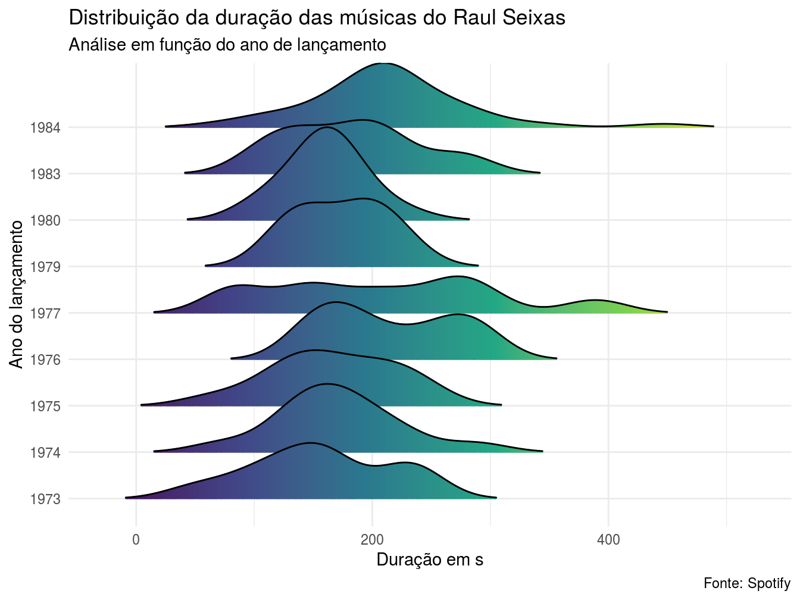
Nota-se que não é possível obter nenhuma indicação clara de relação entre a distribuição do tempo e o ano do lançamento. Poderíamos categorizar o tempo de duração para simplificar essa análise. Nesse caso talvez fosse interessante considerar uma categorização das músicas considerando somente 3 possibilidades: duração curta, média ou longa. Essa categorização poderia ser feita inclusive utilizando os quantis da própria variável utilizando a função quantcut do pacote gtools. O resultado dessa categorização pode ser vista na figura a seguir.
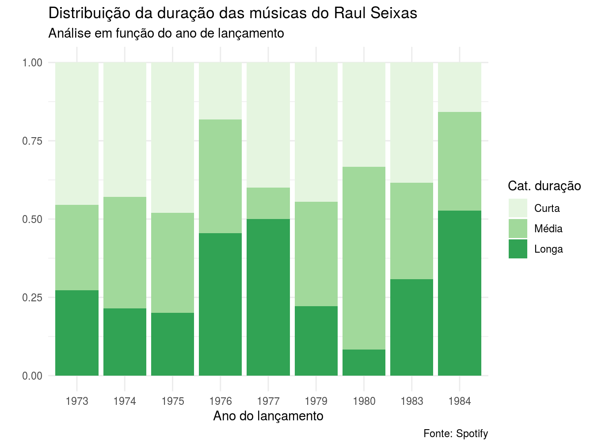
Ao longo do texto estaremos interessados em discutir por exemplo que tipo de associação existe entre essas duas variáveis categóricas. Por exemplo, poderíamos dizer que as duas variáveis são independentes? Esse tema será discutido nos próximos capítulos.
Outra variável categórica disponível na APi do Spotify seria o tom geral da música, que é descrito da seguinte forma, conforme manual de referência, e traduzido livremente aqui:
O tom geral estimado da música. Os valores nesse campo variam de 0 a 11, mapeando para os tons de acordo com uma notação clássica de tom (e.g., 0 = Dó, 1 = Dó#, …). Se nenhum tom é detectado, o valor é igual a -1.
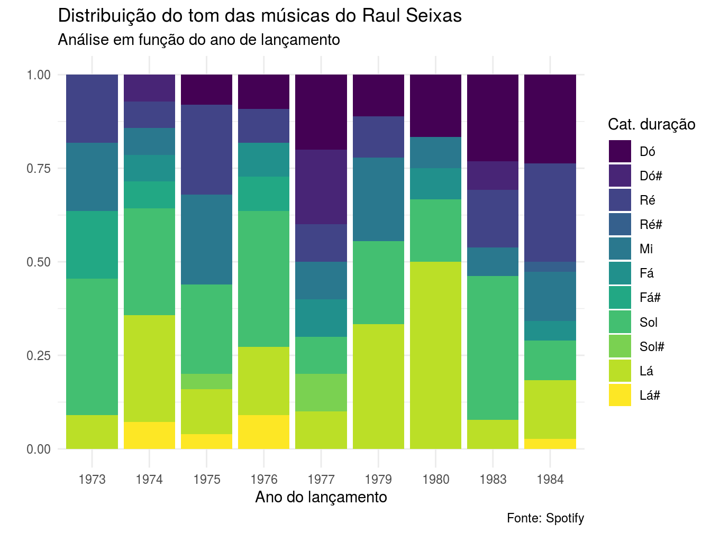
Na Figura ?? podemos ver a distribuição do uso de diferentes tons ao longo dos anos pelo artista Raul Seixas. Lembrando que esses tons são estimados, inclusive a plataforma disponibiliza uma outra variável que associa a cada um desses tons estimados um grau de confiança, porém essa informação não é utilizada aqui. Porém, a partir dessa análise inicial poderíamos dizer que para alguns anos o número de diferentes tons nessa música é menos expressivo. Enquanto que para outros anos a utilização de muitos tons é mais acentuada. Poderíamos apontar o ano de 1977 como um ano em que houve o maior número de tons diferentes na música.
Outra análise que poderia ser feita seria avaliar a relação entre o tempo da música, considerando essa variável categorizada, e o tom utilizado. Para isso, em uma análise descritiva poderíamos considerar o gŕafico a seguir.
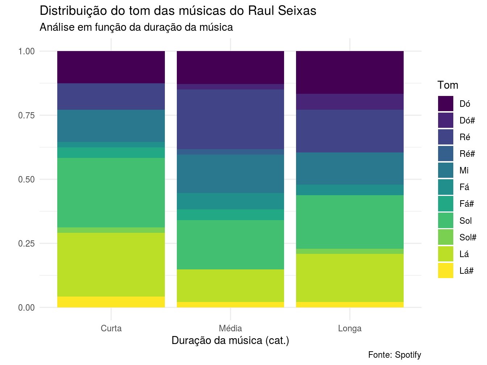
Porém a visualização dos resultados nesse caso, parece ser um pouco prejudicada, devido ao número muito maior de tons do que de categorias de duração da música. Por esse motivo, uma outra possibilidade é alterar o modo de visualização. Poderíamos observar a distribuição da duração da música em função dos tons da música, conforme figura a seguir.
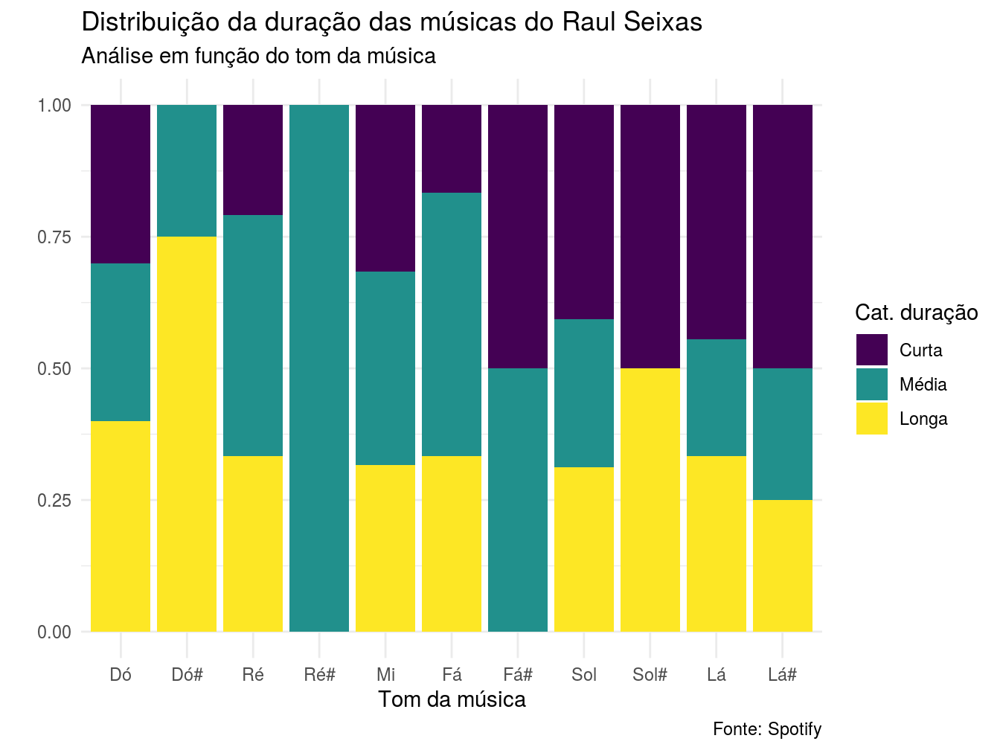
Note que a visualização da informação na Figura ?? parece ser um pouco mais simplificada do que na Figura ??. Porém a análise da última figura mostra que para alguns tons de música não foi possível observar músicas das três diferentes durações. Por exemplo, para o tom Ré# somente músicas de duração média foram observadas. Esse tipo de observação é importante para discutirmos modelos estatísticos que poderiam ser supostos para os dados. Eventualmente categorias sem observações de valores podem se tornar problemáticas para determinadas análises.
O objetivo dessa subseção era apresentar uma forma de diferente de obtenção de dados para análise, nesse caso, considerando informações obtidas de uma plataforma de streaming de músicas, como Spotify. Também é importante discutir como visualizar a informação obtida. Como exercício, que será reforçado ao final do capítulo, seria interessante a tentativa de reprodução dos gráficos apresentados aqui.
1.1.2 Dados obtidos do DATASUS
Para um segundo exemplo sobre dados categorizados vamos utilizar informações sobre o DATASUS, em que diversas variáveis sobre o sistema hospitalar estão disponíveis para uso de todos. Para essa ilustração, consideremos o Sistema de Informações Hospitalares (SIH), em que podemos verificar em todos os Estados brasileiros quantas pessoas foram hospitalizadas em hospitais, em função do tempo de hospitalização. Tal informação pode ser importante para eventualmente considerar problemas de eficiência em determinadas regiões ou eventualmente de profissionais que podem estar prejudicando o atendimento à população. Outras hipóteses que devem ser consideradas para analisar o tempo de hospitalização podem estar relacionadas ao clima ou poluição das cidades, assim como aos/às possíveis motivos/doenças que causam essas hospitalizações, entre outros fatores. Porém, aqui inicialmente vamos utilizar somente os dados de em sua forma mais simples, isto é, vamos avaliar por Estado a duração do tempo de hospitalização para o ano de 2018.
Separemos inicialmente o tempo de hospitalização até 3 dias, entre 3 dias e até 7 dias e mais do que 7 dias. A depender do interesse, outras categorizações poderiam ser utilizadas para o efeito dessa análise. A tabela com as respectivas quantidades é apresentada em seguida:
| Menor que 3 dias | Entre 3 e 7 dias | Maior que 7 dias | |
|---|---|---|---|
| AC | 29.324 | 8.757 | 6.714 |
| AL | 116.464 | 31.494 | 29.557 |
| AM | 108.132 | 44.931 | 31.727 |
| AP | 23.960 | 7.720 | 6.332 |
| BA | 567.871 | 135.945 | 125.358 |
| CE | 302.072 | 103.923 | 98.765 |
| DF | 118.476 | 47.189 | 46.562 |
| ES | 147.631 | 52.018 | 43.391 |
| GO | 226.784 | 57.489 | 49.280 |
| MA | 344.637 | 69.411 | 57.330 |
| MG | 745.551 | 274.402 | 225.807 |
| MS | 110.933 | 31.866 | 26.057 |
| MT | 127.860 | 35.091 | 28.691 |
| PA | 345.591 | 94.365 | 53.964 |
| PB | 111.170 | 38.405 | 37.718 |
| PE | 329.240 | 118.111 | 117.593 |
| PI | 141.089 | 42.908 | 34.343 |
| PR | 607.942 | 160.164 | 118.811 |
| RJ | 390.143 | 147.568 | 190.146 |
| RN | 109.622 | 30.802 | 34.490 |
| RO | 81.671 | 21.138 | 17.069 |
| RR | 26.237 | 9.323 | 8.185 |
| RS | 399.140 | 166.227 | 180.125 |
| SC | 317.700 | 94.846 | 78.365 |
| SE | 60.864 | 16.049 | 17.864 |
| SP | 1.581.736 | 474.649 | 481.952 |
| TO | 42.658 | 12.933 | 12.420 |
Porém, note como essa tabela contêm muitas linhas, a informação que gostaríamos de avaliar fica um pouco prejudicada em virtude dessa quantidade grande de inputs. Uma outra maneira de visualizar essa quantidade seria colocar isso num gráfico. Em se tratando de uma variável que se refere a uma informação espacial podemos utilizar um mapa para apresentar esses dados. Além disso, se temos interesse em discutir as categorias de tempo de internação, podemos calcular a proporção de pessoas em cada uma das categorias condicionalmente ao Estado, isto é, para cada Estado verificamos qual é a proporção de pessoas que ficaram internadas até 3 dias, a proporção que ficou internada entre 3 e 7 dias e, por último, a proporção que ficou internada um tempo maior que 7 dias.
Se fizermos isso, o resultado no gráfico com os mapas ficariam da seguinte forma
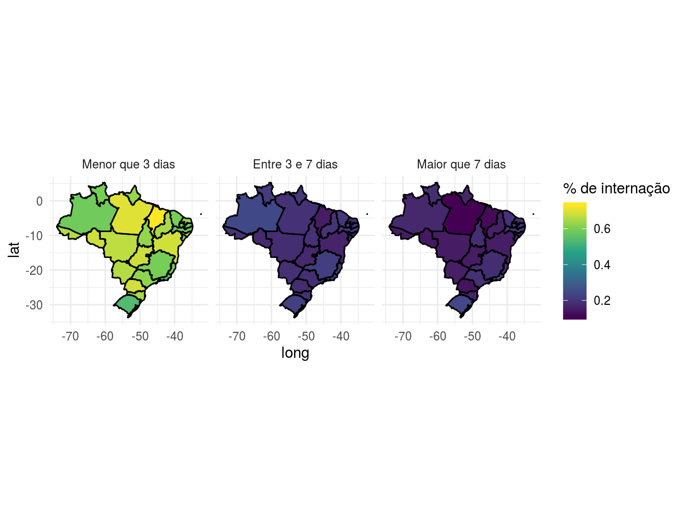
Porém, note agora que devido a diferença de escala entre as três categorias, não é possível perceber a diferença entre os três mapas. No entanto, não é necessário observar essas três proporções, porque elas são complementares, isto é, a soma das três é igual a 1. Nesse caso, podemos focar nas duas categorias à direita que têm escalas muito mais próximas.
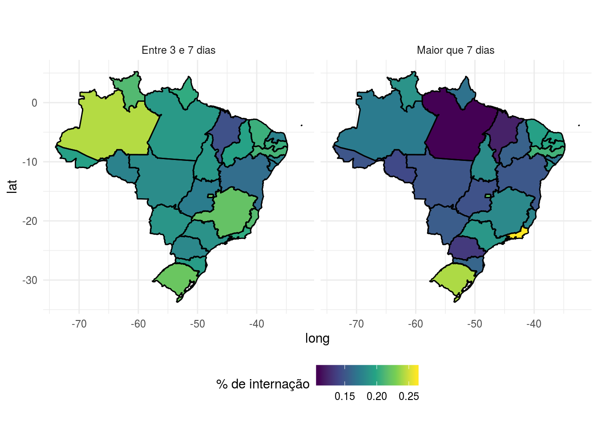
Com isso obtemos a Figura ?? em que é possível identificar de forma muito mais evidente a diferença entre as proporções de internação entre os diferentes Estados. Por exemplo, agora é possível notar de forma bastante clara com o Rio de Janeiro tem um percentual de internação, condicional ao tempo de internação maior que 7 dias, muito maior que os outros Estados. Seria interessante discutir ou entender os motivos por trás dessa diferença. Seria a distribuição das doenças pelas quais as pessoas são levadas ao hospital diferente nesse Estado do que em outros? Seria um problema típico do ano de 2018, em que houve algum surto de alguma doença? Ao longo do texto, iremos utilizar mais informações para discutir essas hipóteses.
1.1.3 Dados sobre o Campeonato Brasileiro de Futebol 2012-2019
Como última representação de dados categorizados poderíamos considerar dados de esportes também. Em diversos esportes é interessante analisar a distribuição dos resultados e tentar buscar informações que ajudem a entender a aleatoriedade dos respectivos esportes. Isso não é diferente no futebol e podemos pensar, por exemplo, na diferença entre jogar “em casa” ou “fora de casa”, como é comum identificar os times que são mandantes e aqueles que viajam para jogar no campo do adversário.
Para isso, consideremos para essa análise do Campeonato Brasileiro entre os anos de 2012-2019, os quais podemos obter os dados do sítio football-data.co.uk, em que as descrições dos campos do banco de dados podem ser encontradas aqui.
Inicialmente, podemos identificar o resultado da partida como uma variável aleatória categórica, em que podemos classificar os seus possíveis valores como: “C”, vitória do time da casa; “E”, empate; “F”, vitória do time visitante. Se observarmos a distribuição dessas variáveis ao longo dos anos, veremos o resultado na figura a seguir.
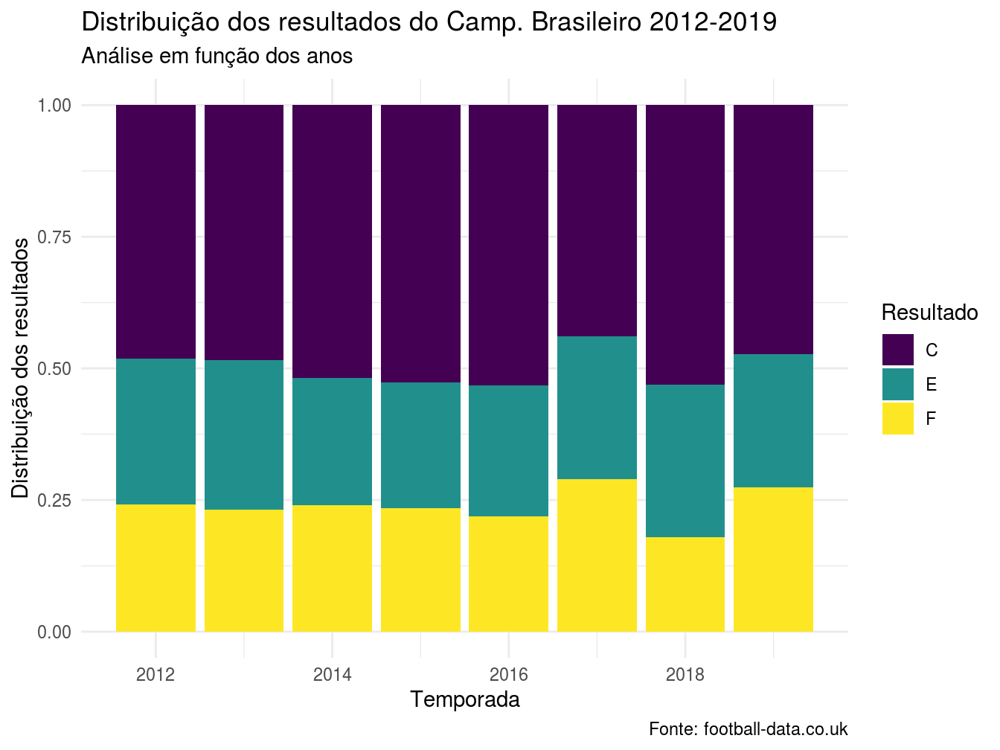
É possível perceber, por exemplo, que a distribuição tem poucas alterações ao longo dos anos. Em particular, a proporção de vezes que o time visitante vence costuma variar em torno de 25%. O mesmo valor parece ser verdade para a proporção de empates. Valores mais diferentes dessa regra parecem ter sido os três últimos anos, de 2017 a 2019. Esse tipo de análise, por exemplo, é intuito desse curso. Por exemplo, será que poderíamos responder que essas probabilidades de vitória de cada um dos casos seria independente do ano do Campeonato Brasileiro? Em outras palavras, temos o interesse em dizer se essas probabilidades se manteram as mesmas ao longo dos anos, ponderando a incerteza natural desses processos.
Uma outra análise simples que poderia ser feita seria a comparação do desempenho dos campeões com os demais participantes em cada um dos anos. Por exemplo, será que a distribuição dos resultados do campeão ao longo dos anos teve uma grande variação para esses certames analisados? Se fizermos isso, o resultado seria o seguinte:
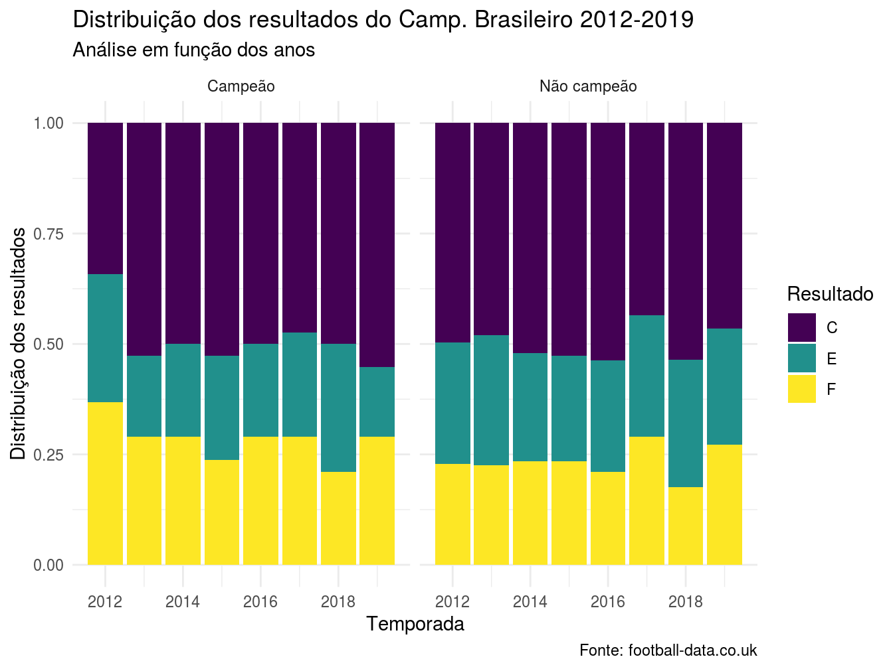
A Figura acima pode ser um pouco problemática, porque a partir da sua análise não é possível identificar se o time campeão se saiu vencedor em cada uma das partidas que fez como mandante ou visitante. Porém, é possível perceber alguns padrões. Por exemplo, em geral, a proporção de empates parece ser menor para os times que acabam se sagrando campeões. Por outro lado, também parece haver uma proporção maior de vitórias do time jogando fora de casa. Aqui, é claro devemos ter o cuidado de notar que essas vitórias também podem ter sido do time adversário, quando jogou contra o time campeão na casa deste.
Aqui poderíamos pensar em modelos probabilísticos que pudessem a explicar a probabilidade de vitória entre os times em cada um dos jogos. Ao longo do texto, iremos retornar a esse banco de dados para discutir como trabalhar esse tipo de informações.
1.2 Distribuições de probabilidade
Para discutir sobre a aleatoriedade das variáveis categóricas de interesse nos problemas apresentados ao longo desse texto, é preciso fazer suposições sobre a distribuição de probabilidade dessas variáveis aleatórias de interesse. Ao menos, essa é uma das perspectivas possíveis, e talvez mais utilizadas, dentro da Estatística, a qual denominamos de Estatística Paramétrica. Esse nome se dá devido aos parâmetros das distribuições de probabilidade, que iremos utilizar em cada um dos problemas. Para o caso de dados categorizados, iremos considerar as seguintes distribuições de probabilidade: binomial, multinomial e Dirichlet. As duas primeiras iremos assumir para a função de distribuição dos valores observados, que iremos identificar como verossimilhança posteriormente, enquanto que a última distribuição de probabilidade iremos utilizar para definir uma distribuição de probabilidade a priori quando estivermos falando sobre o método de inferência bayesiano na última seção deste capítulo.
1.2.1 Distribuição binomial
Primeiramos, definamos uma variável aleatória \(Y\), em que somente dois resultados são possíveis. Por exemplo, ao jogarmos uma moeda o resultado pode ser somente cara ou coroa. Ainda quando vamos classificar as pessoas com relação ao seu hábito de fumar, diríamos que os resultados possíveis são fumante ou não fumante. A esses valores usualmente associamos a denominação de sucesso ou fracasso, porém essa denominação não é importante aqui. Podemos associar a esses possíveis valores, os valores numéricos 0 e 1, apenas para facilitar a definição de alguns eventos de probabilidade. Para o caso do hábito de fumar, poderíamos fazer
\[ Y = \begin{cases} 1, & \mbox{se a pessoa é fumante}, \\ 0, & \mbox{caso contrário} \end{cases} \] Para essa variável binária podemos assumir que esta tem distribuição Bernoulli, com uma parâmetro de probabilidade p que define essa distribuição de probabilidade. Ao definir esse parâmetro, podemos dizer que \[ P(Y = 1) = p, \quad \quad P(Y = 0) = 1 - p. \] Agora considere uma sequência de variáveis aleatórias indepedentes e identicamente distribuídas com distribuição Bernoulli, i.e., \(Y_1, \cdots, Y_n\), em que \(Y_i \sim Bernoulli(p)\), \(i = 1, \cdots, n\). Se definirmos \(W\) como a soma dessa sequência, i.e., \(W = \sum_{i=1}^n Y_i\), então dizemos que \(W\) tem distribuição Binomial com parâmetros \(n\) e \(p\). Os valores possíveis que essa variável aleatória assume são \(W = \{0, 1, \cdots, n\}\) e a sua função de probabilidade é dada por
\[
P(W = w) = \frac{n!}{w!(n-w)!} p^w (1-p)^{n-w}, \quad w = 0, 1, \cdots, n.
\]
Para alguns valores fixados de \(n\) e \(p\) podemos utilizar o R para fazer o gráficos das respectivas funções de probabilidade. Por exemplo, se fizermos \(n = 10\) e \(p\) variando entre 0,2, 0,5 e 0,8, encontraríamos o seguinte:
valores_p <- c(0.2, 0.5, 0.8)
n <- 10
valores_fp <- sapply(valores_p, function(x) dbinom(0:n, prob = x, size = n)) %>%
as.numeric()
dados_figura <- data.frame(x = rep(0:n, length(valores_p)),
n = rep(n, length(valores_fp)),
p = rep(valores_p, each = n + 1),
valores_prob = valores_fp)
ggplot(dados_figura) + theme_minimal() +
geom_bar(aes(x = x, y = valores_prob, fill = factor(p)),
stat = 'identity', width = 0.5, position = 'dodge') +
scale_fill_viridis_d(name = "p = ") +
facet_wrap(~ p) +
scale_x_continuous(breaks = 0:n) +
labs(title = "Distribuição Binomial para n = 10",
subtitle = "E p igual a 0,2, 0,5 ou 0,8",
y = "P(W = w)",
x = "w") +
theme(legend.position = 'bottom',
strip.background = element_blank(),
strip.text.x = element_blank())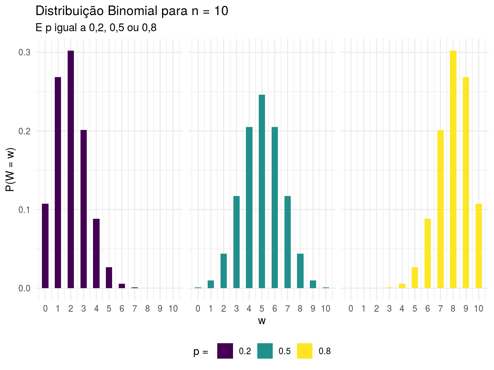
Note como para \(p\) igual a 0,5 os valores das probabilidades parecem ser simétricos em torno do valor quando \(w = 5\). Enquanto que para os outros dois valores de \(p\) a distribuição de probabilidade parece assimétrica. Esse é um resultado característico da distribuição Binomial. Como propriedades dessa variável aleatória \(W\) temos que \[ E(W) = np, \quad Var(W) = np(1-p). \] Essas informações nos ajudam então a propôr essa distribuição de probabilidade para determinadas variáveis aleatórias. Por exemplo, se considerássemos o exemplo da seção anterior, sobre tempo de internação, mas fizemos a seguinte categorização \[ Y = \begin{cases} 1, & \mbox{se a pessoa fica internada até 3 dias}, \\ 0, & \mbox{caso contrário}. \end{cases} \] Considerando uma amostra de 10 pessoas, ou seja \(n = 10\), poderíamos dizer qual a probabilidade de 5 dessas pessoas terem ficado internada por até 3 dias. Para \(p = 0,5\) essa probabilidade seria igual a \[ P(W = 5) = {10 \choose 5} 0.5^5 (1-0.5)^{10 - 5} = 0,2461 \] Se considerássemos \(p=0.8\), ao invés de \(p = 0.5\), obteríamos que essa probabilidade é igual a 0,0264. Com relação aos valores esperados, teríamos que esses valores seriam 5 e 8, respectivamente considerando os dois valores para \(p\). Vemos então que ao assumir valores para os parâmetros somos capazes de fazer asserções sobre a incerteza dessas variáveis aleatórias. Na prática os valores desses parâmetros são sempre desconhecidos, então precisaremos discutir como fazer inferência sobre esses valores. O tema da próxima seção é exatamente este.
Ainda sobre a distribuição Binomial, um resultado importante que podemos citar se refere a aproximação dessa distribuição de probabilidade pela distribuição Normal, quando \(n \rightarrow \infty\), isto é, quando \(n\) cresce. Considere o gráfico anterior, por exemplo, quando consideramos \(n = 100\), desconsiderando o valor de \(p = 0,5\).
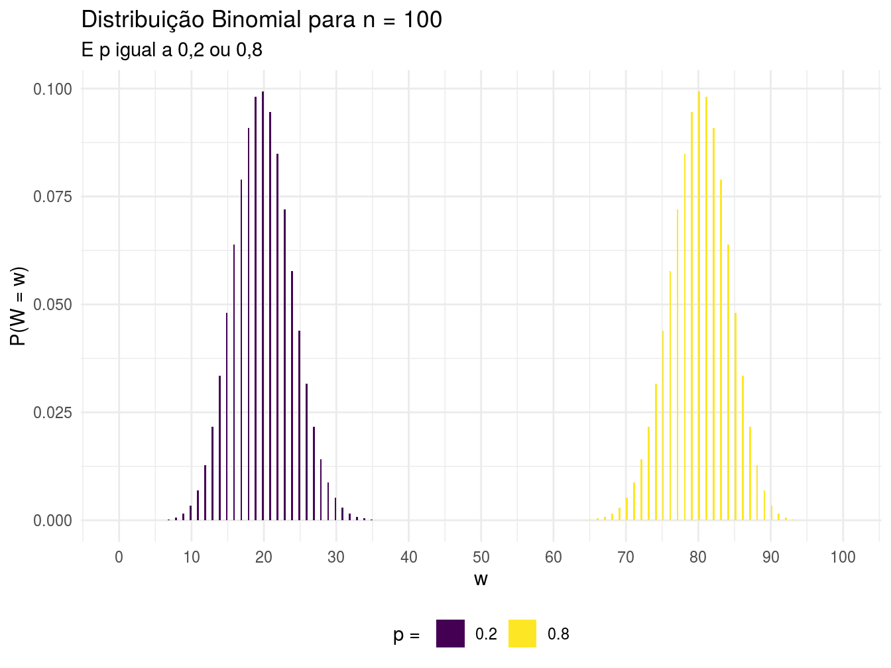 Notem como apesar de \(p\) ser um valor diferente de 0,5, agora a distribuição dos valores de probabilidade parece ter uma distribuição de probabilidade simétrica. Inclusive os valores parecem se distribuir de acordo com a distribuição Normal. Aliás, essa aproximação pode ser utilizada para calcular probabilidades de uma variável aleatória Binomial, que é uma distribuição de probabilidade para valores discretos, com a distribuição Normal, que é uma distribuição de probabilidade para valores contínuos. Essa aproximação se dá utilizando uma distribuição Normal com média \(\mu = np\) e desvio padrão \(\sigma = \sqrt{np(1-p)}\), e pode ser justificada pelo Teorema do Limite Central, porém não faremos essa demonstração aqui.
1.2.2 Distribuição multinomial
Considere agora novamente o exemplo do tempo de internação, segundo dados do SUS, que utilizamos na seção anterior. Quando discutimos uma ilustração da distribuição Binomial, na subseção anterior, consideremos uma categorização somente com duas categorias. Isso foi devido a necessidade de definirmos a distribuição Binomial como uma soma de variáveis aleatórias Bernoulli, em que somente dois valores são possíveis. Considere o caso em que temos mais de duas categorias como resultados possíveis de um experimento aleatório discreto, e temos uma sequência independente desses eventos aleatórios. Supondo que gostaríamos de falar sobre as probabilidades dos possíveis valores observados para cada uma das categorias, então precisamos utilizar a distribuição multinomial.
A variável aleatória associada à distribuição multinomial é uma variável aleatória multivariada. Por exemplo, para falarmos de probabilidade para valores dessa variável aleatória temos que definir um vetor de possilidades. Por exemplo, voltando ao exemplo do tempo de internação, supondo uma amostra de 10 pessoas, um possível valor para essa variável aleatória seria \(\{4, 5, 1\}\), em que 4 pessoas ficaram internadas até 3 dias; 5 pessoas ficaram internadas entre 3 e 7 dias; e 1 pessoa ficou internada por mais de 7 dias.
A distribuição multinomial é uma generalização da distribuição Binomial. Considere que temos \(k\) categorias. Podemos definir as probabilidades de cada uma das categorias pelo vetor \(\{p_1, p_2, \cdots, p_k\}\), em que \(\sum_{i=1}^k p_i = 1\). Para definir sua função de probabilidade, considere os valores \(n_1, n_2, \cdots, n_k\), em que \(n_i\) representa a quantidade de observações, dentre os \(n\) ensaios independentes, que são classificados na \(i\)-ésima categoria, em que \(\sum_{i=1}^k n_i = n\). Assim, podemos definir a função de probabilidade como
\[ P(Y_1 = y_1, Y_2 = y_2, \cdots, Y_k = y_k) = \frac{n!}{y_1!y_2!\cdots y_k!} p_1^{y_1} p_2^{y_2} \cdots p_k^{y_k} \] Consideremos o caso em que \(k = 3\), então podemos visualizar o gráfico com essa função de probabilidade de forma mais simples. Considere o caso em que \(n = 10\), então supondo o vetor de probabilidades \((p_1, p_2, p_3) = (0,4, 0,4, 0,2)\) teríamos o seguinte gráfico da distribuição de probabilidade
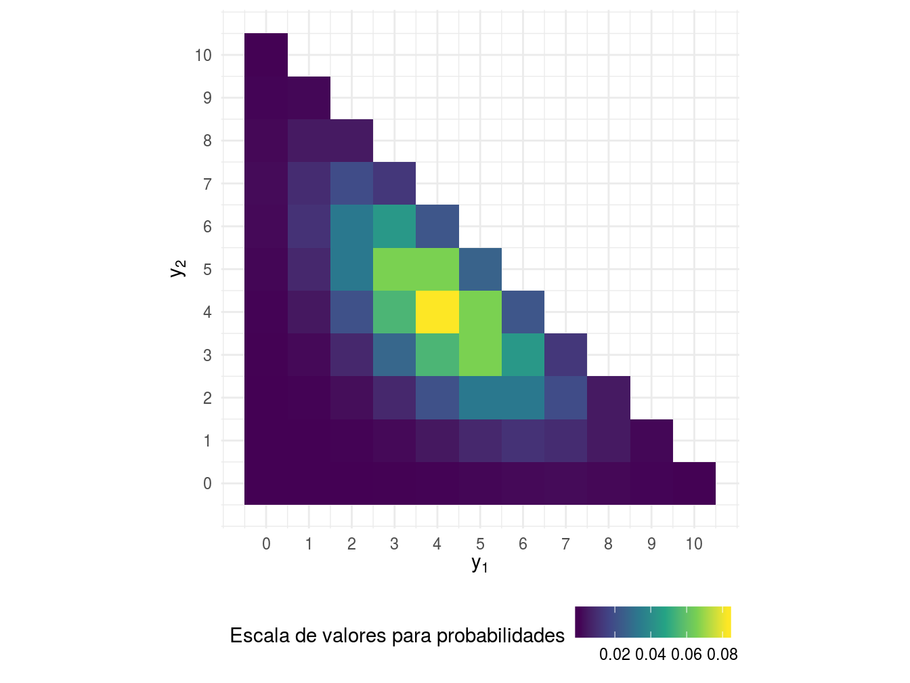
Note, por exemplo, que algumas combinações não são possíveis. Por exemplo, para \(y_1 = 6\) e \(y_2 = 5\) não é possível calcular nenhum valor de probabilidade, pois isso violaria a condição que \(\sum_{i=1}^k n_i = n\). Se considerássemos outro valor para o vetor de probabilidades, como \((p_1, p_2, p_3) = (0,10, 0,25, 0,65)\) obteríamos o seguinte
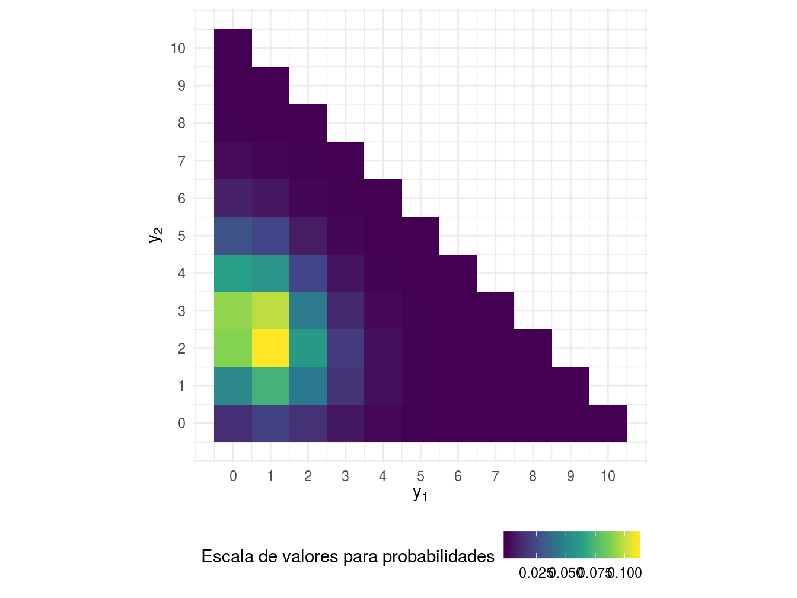
Essa ilustração é somente para ilustrar como devemos calcular as probabilidades para o caso multivariado e como devemos entender essa distribuição de probabilidade. De todo modo, iremos utilizar a distribuição multinomial em diversos momentos nos próximos capítulos.
1.2.3 Distribuição Dirichlet
A distribuição Dirichlet é uma versão multivariada da distribuição Beta. Lembremos que a distribuição de probabilidade Beta é uma distribuição voltada para variáveis aleatórias contínuas com suporte no intervalo [0, 1]. Supondo uma variável aleatória, \(Y \in [0, 1]\), dizemos que \(Y\) segue uma distribuição beta com parâmetros \(a > 0\) e \(b > 0\), se sua função de densidade for escrita como
\[
f(y | a, b) = \frac{\Gamma(a+b)}{\Gamma(a)\Gamma(b)} y^{a-1}(1-y)^{b-1}.
\]
Nesse caso, temos que \(E(Y) = a/(a+b)\) e \(Var(Y) = (a+b)/[(a+b)^2(a+b+1)]\). Podemos usar o R para visualizar alguns exemplos dessa densidade fazendo
numero_pontos <- 100
list_parametros <- list(c(1, 1),
c(3, 1),
c(1, 3),
c(4, 4),
c(10, 10))
densidade_beta <- lapply(list_parametros,
function(x) dbeta(0:numero_pontos/numero_pontos,
x[1], x[2])) %>%
unlist()
dados_beta <- data.frame(x = rep(0:numero_pontos/numero_pontos,
length(list_parametros)),
densidade = densidade_beta,
parametros = rep(as.character(list_parametros),
each = numero_pontos + 1))
ggplot(dados_beta, aes(x = x, y = densidade, color = parametros)) +
theme_minimal() +
geom_line() +
scale_color_discrete(name = "(a, b)")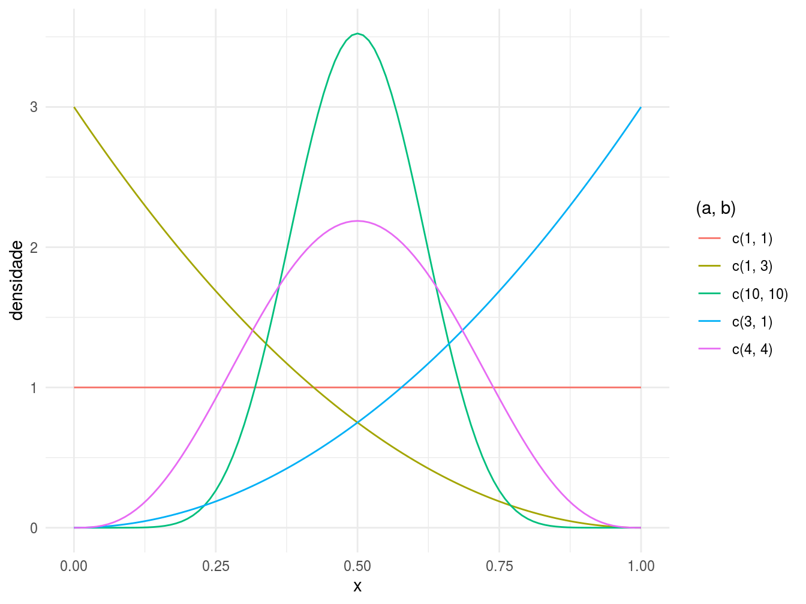
Podemos ver que essa distribuição de probabilidade pode apresentar diferentes formas. Em especial, a distribuição uniforme é um caso especial quando \(a = 1\) e \(b = 1\).
A distribuição Dirichlet é então uma extensão multivariada para essa distribuição de probabilidade. Se considerarmos um vetor aleatório \(\boldsymbol Y\) em que \(Y \in [0, 1]^k\) e \(\sum_{i=1}^k y_i = 1\), então dizemos que \(\boldsymbol Y\) segue uma distribuição Dirichlet com parâmetro \(\boldsymbol \alpha\), \(\alpha \in \mathbb{R}_+^k\), quando sua função densidade puder ser descrita como \[ f(y_1, \cdots, y_k | \boldsymbol \alpha) = \frac{1}{B(\boldsymbol \alpha)} \prod_{i=1}^k y_i^{\alpha_i - 1} \]
Essa distribuição de probabilidade é particularmente importante para os métodos de inferência bayesiana que discutiremos na próxima seção. Para fazer o gráfico da densidade, há o problema da dimensionalidade, porém podemos ver alguns exemplos para o caso trivariado nas figuras, conforme variamos os valores de \(\boldsymbol \alpha\). 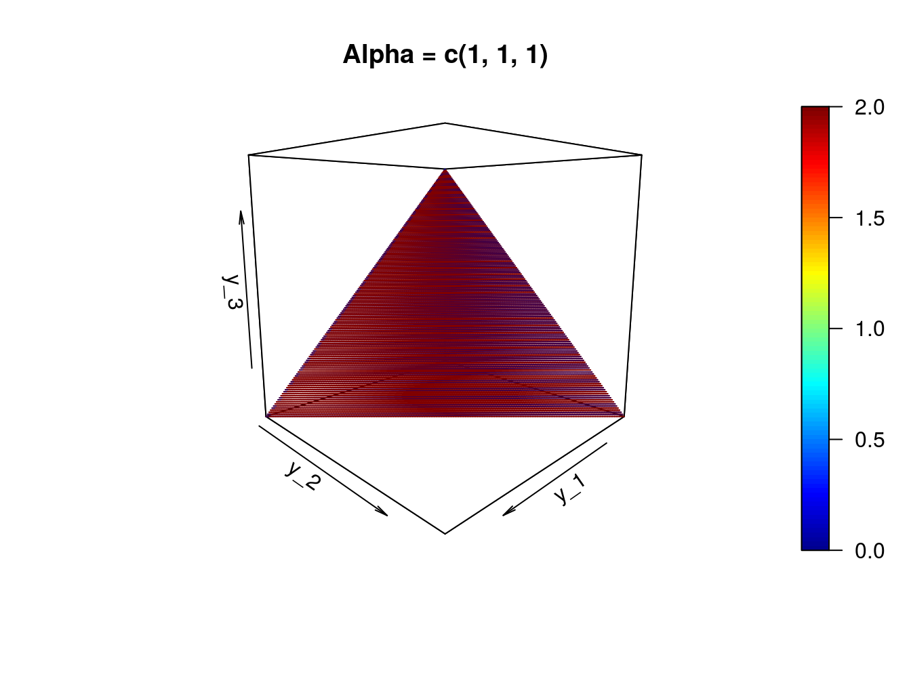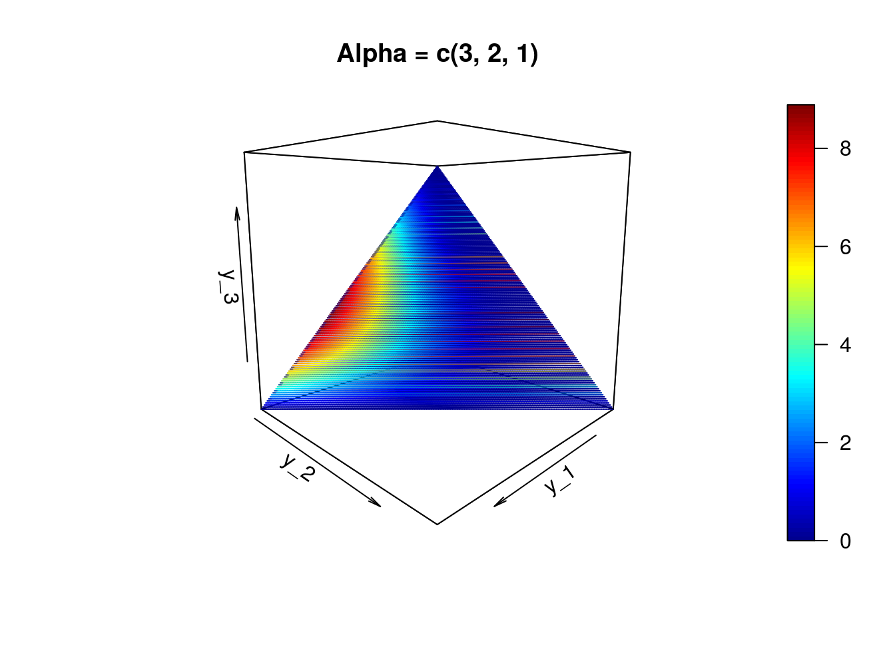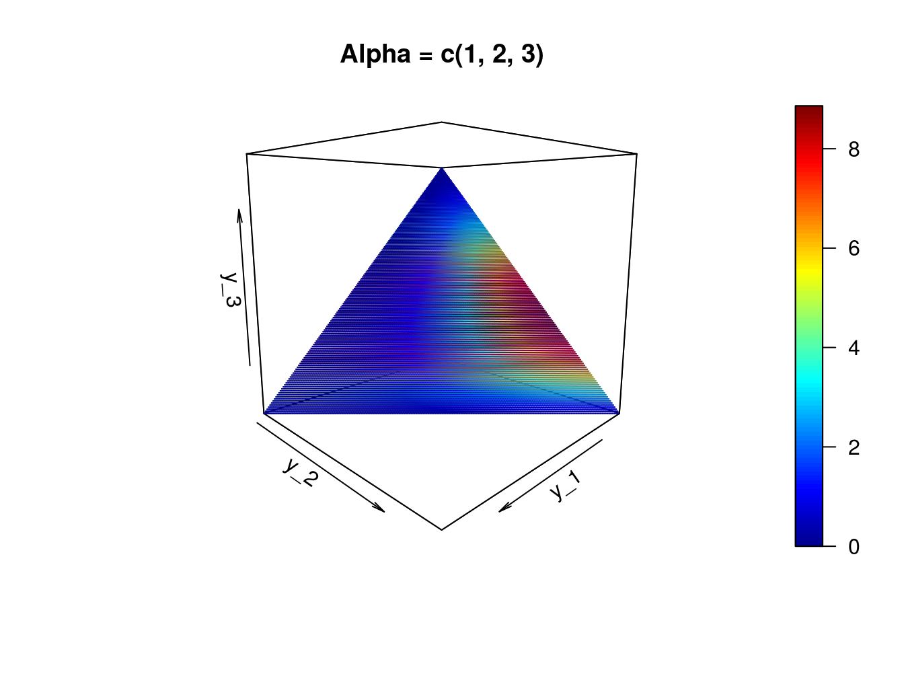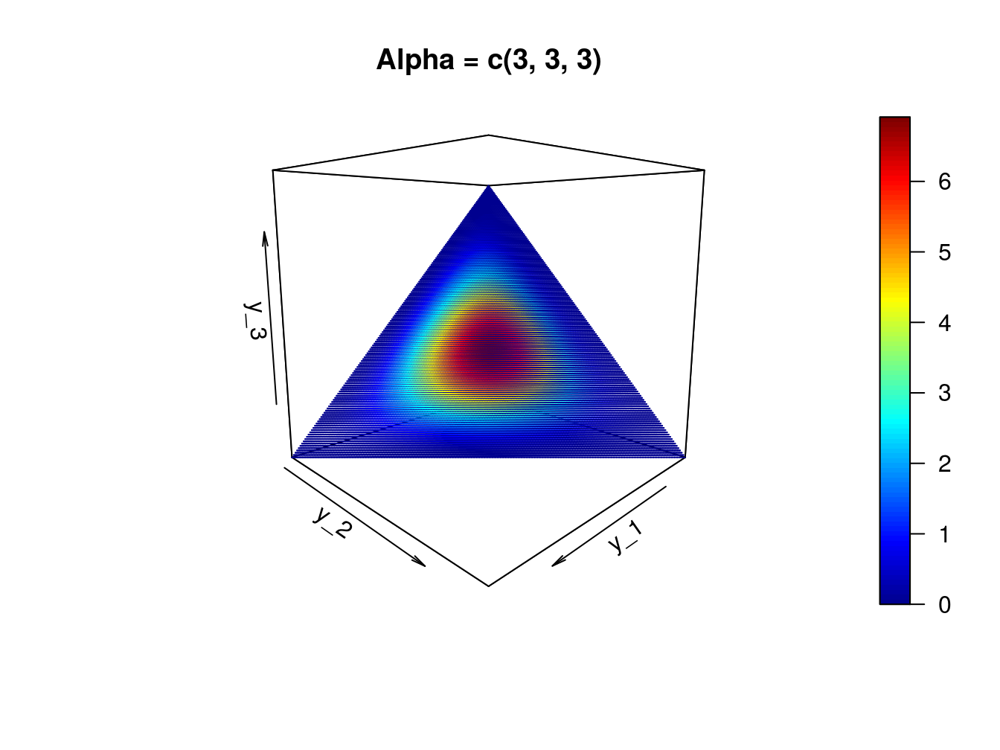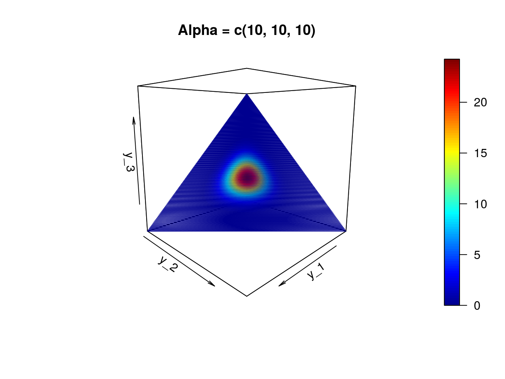
Notem que quando \(\alpha_1 = \alpha_2 = \alpha_3\) a densidade se concentra em valores mais centrais do simplex em três dimensões, com exceção do caso em que todos os valores são iguais a 1. Nesse caso, temos um exemplo de uma distribuição uniforme multivariada. Para os outros valores de \(\alpha\) a concentração da densidade depende dos valores definidos, mas as densidades apresentam diferentes formas.
1.3 Métodos inferenciais
Na seção anterior, mostramos alguns exemplos das distribuições apresentadas, porém utilizamos valores fixos dos parâmetros para ilustrar suas funções de probabilidade ou função densidade. Na prática, esses parâmetros são desconhecidos e precisamos estimá-los. Nessa seção, apresentaremos brevemente alguns resultados para estimação desses parâmetros, tanto do ponto de vista clássico, utilizando métodos de maximização da verossimilhança, quanto do ponto de vista clássico, apresentando o Teorema de Bayes utilizado para o cálculo.
1.3.1 Método da máxima verossimilhança
Quando consideramos os dados observados e calculamos a probabilidade de observar aquela amostra como uma função do parâmetros, estamos definindo a função de verossimilhança. Tome como exemplo, o caso Binomial em que \(n = 6\) e observamos 2 sucessos, ou seja, a probabilidade de observamos essa amostra para diferentes valores de \(p\) é dada por \[ P(Y = 2|p) = {6 \choose 2} p^2 (1-p)^4. \] Note que a equação acima está definida para diferentes valores de \(p\). Inclusive podemos colocar essa informação em um gráfico, da seguinte forma:
verossimilhanca_bin <- function(p, n, y){
dbinom(y, size = n, prob = p)
}
curve(verossimilhanca_bin(x, n = 6, y = 2),
ylab = "", xlab = "")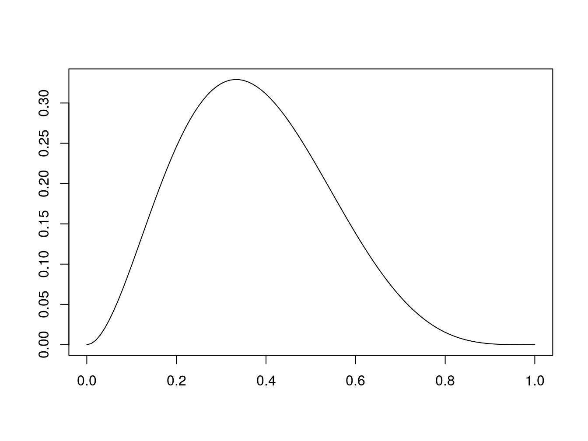
Nesse caso, para o caso binomial podemos sempre escrever a função de verossimilhança como \[ L(p) = {n \choose y} p^y (1-p)^{n-y}, \] em que \(n\) e \(y\) são sempre considerados fixados. É possível mostrar que o estimador de máxima verossimilhança (EMV) é dado por \[ \hat{p} = \frac{y}{n}, \] em que \(y\) representa o valor de sucessos observados. No exemplo anterior, teríamos \(\hat{p} = 2/6 = 1/3\). Tal informação pode ser vista no gráfico da função de verossimilhança, uma vez que 1/3 é o ponto em que a função de verossimilhança apresenta seu maior valor.
O EMV tem boas propriedades assintóticas, por isso ele é bastante utilizado. Podemos descrever a incerteza sobre os seus valores utilizando o resultado que, se \(\hat{\theta}\) é o EMV para o estimando o parâmetro \(\theta\), então podemos dizer em geral que
\[
\frac{\hat{\theta} - \theta}{I(\theta)} \stackrel{a}{\sim} N(0, 1),
\]
em que \(I(\theta)\) é a informação de Fisher. Isso nos mostra que o EMV é assintoticamente não viesado para estimar \(\theta\). No caso binomial, temos que
\[
\hat{p} \sim N\left(p, \frac{p(1-p)}{n} \right).
\]
Esse resultado pode ser justificado também pelo Teorema Central do Limite, notando que o estimador é uma soma de variáveis aleatórias com distribuição Bernoulli. E essa informação pode ser utilizada para construir intervalos de confiança e testes de hipóteses sobre o parâmetro \(p\) de interesse, porém não os discutiremos aqui nessa parte do texto.
Para ilustrar algumas características desses estimadores, podemos discutir alguns resultados tendo em vista valores gerados da distribuição Binomial, com valor \(p\) conhecido e fixado. Consideremos \(p = 0,30\) e geramos valores de amostra com três tamanhos de amostra diferentes. No primeiro caso geramos 20 valores de \(Y \sim Bin(n = 20, 0,3)\), enquanto no segundo caso geramos 100 valores dessa mesma variável aleatória e no terceiro 200 valores são gerados. Os resultados podem ser observados no gráfico a seguir.
set.seed(42)
n <- c(20, 100, 200)
seq_p <- seq(0, 1, length.out = 250)
valores_verossimilhanca <- lapply(n, function(x){
valores_amostrais <- rbinom(x, size = 20, prob = 0.3)
vero_calc <- function(p){
sapply(valores_amostrais,
dbinom, size = 20, prob = p, log = TRUE) %>%
sum() %>%
exp()
}
sapply(seq_p, vero_calc)
}) %>% unlist()
dados_verossimilhanca <- data.frame(valores = valores_verossimilhanca,
p = rep(seq_p, times = length(n)),
tam_amostra = rep(n, each = length(seq_p)))
ggplot(dados_verossimilhanca, aes(p, valores_verossimilhanca)) +
theme_minimal() +
geom_line() +
facet_wrap(~ tam_amostra, scales = 'free') +
xlim(c(0.25, 0.35)) + ylab("Verossimilhança") + xlab("Valores de p") +
geom_vline(aes(xintercept = 0.3), linetype = 2, size = 0.5, color = 'grey50')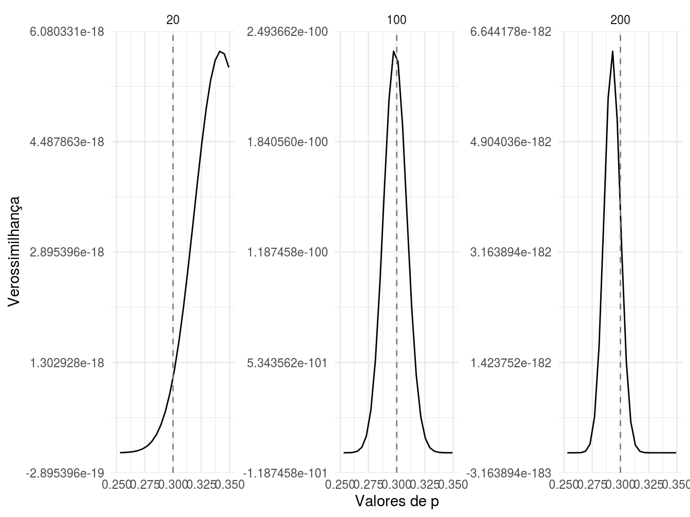
Quando aumentamos o tamanho da amostra, aumentamos a informação que temos sobre os possíveis valores de \(p\), que é desconhecido, uma vez que é menor a banda de valores possíveis, tendo em vista a função de verossimilhança. Ou seja, temos menos incerteza sobre quais os possíveis valores de \(p\) que podem ter gerado aquela amostra observada. Note inclusive que o estimador para o caso em que 20 valores foram gerados apresenta um pequeno viés, pois a estimativa de máxima verossimilhança se encontra em um valor um pouco maior que 0,30.
1.3.2 Métodos bayesianos
Para falar brevemente sobre métodos bayesianos para estimar os parâmetros da distribuição binomial ou da distribuição multinomial, lembremos inicialmente do Teorema de Bayes. Suponha que estamos interessados no estimando \(\theta \in \mathbb{R}\) e suponhamos uma distribuição a priori \(p(\theta)\) para esse parâmetro. O Teorema de Bayes nos diz que a distribuição a posteriori de \(\theta\) pode ser escrita como \[ p(\theta | y) = \frac{L(\theta)}{p(y)} p(\theta), \] em que \(L(\theta)\) é a verossimilhança dos dados e \(p(y) = \int_\mathbb{R} p(y|\theta) p(\theta) d(\theta)\) é a distribuição marginal dos dados. Em geral, podemos desconsiderar o denominador, por se tratar somente de uma função normalizador, para que a integral da densidade a posteriori integre 1, pois essa quantidade não depende de \(\theta\). Então, podemos escrever a densidade a posteriori como \[ p(\theta | y) \propto L(\theta) p(\theta), \] ou seja, a informação a posteriori é o conhecimento que tínhamos a priori, atualizado pela função de verossimilhança. Por esse motivo, que o Teorema de Bayes é conhecido como o procedimento estatístico para atualizarmos sobre nossas crenças sobre valores desconhecidos quando obtemos novas informações.
Na seção anterior, discutimos o método de verossimilhança para obter estimativas sobre \(p\) no caso Binomial. Vejamos agora como podemos adicionar a informação a priori para obtermos uma distribuição a posteriori para \(p\).
Podemos considerar que a distribuição a priori deve ser a medida de conhecimento que temos sobre o parâmetros antes de observarmos nossos dados. Uma possível abordagem é considerar todos os valores equiprováveis a priori. Como o espaço paramétrico de \(p\) é o intervalo [0, 1], então poderíamos considerar a distribuição uniforme nesse mesmo intervalo. Nesse caso, a distribuição a posteriori vai ter a mesma forma (ou distribuição) da verossimilhança, pois a distribuição dá pesos iguais para todos os valores de \(p\). Note que a distribuição Uniforme no intervalo (0, 1) para variáveis contínuas é um caso especial da distribuição Beta quando os seus respectivos parâmetros são ambos iguais a 1.
No entanto, podemos discutir a distribuição de probabilidade a posteriori de \(p\) para diferentes valores de \(a\) e \(b\), da função densidade de uma variável aleatória com distribuição Beta. Mudando um pouco as definição para facilitar a leitura, se considerarmos somente os termos que dependem de \(p\), podemos reescrever o seguinte para a distribuição a posteriori
\[ \begin{aligned} \pi(p| y) &\propto L(p) \pi(p) \\ &\propto p^{y} (1-p)^{n-y} p^{a - 1}(1-p)^{b-1} \\ &= p^{y + a - 1}(1-p)^{n - y + b - 1}. \end{aligned} \]
O resultado anterior indica que a distribuição a posteriori de \(p\), quando consideramos uma distribuição a priori, \(p \sim \mbox{Beta}(a, b)\), também tem distribuição Beta com parâmetros \(y + a\) e \(n - y + b\), quando consideramos para a verossimilhança \(Y|p \sim Bin(n, p)\). Considerando novamente o cenário em que obtivemos 2 sucessos em 6 eventos independentes com distribuição Bernoulli, com probabilidade \(p\),podemos comparar a distribuição a posteriori para diferentes valores de \(a\) e \(b\). No gráfico a seguir, a linha preta representa a função de verossimilhança, enquanto que as linhas coloridas representam as quantidades consideradas pela atualização bayesiana: a linha pontilhada colorida representa a informação a priori, enquanto que a respectiva linha cheia colorida representa a distribuição a priori.
ggplot(data.frame(x = c(0, 1)), aes(x)) +
theme_minimal() +
stat_function(fun = verossimilhanca_bin, args = list(n = 6, y = 2)) +
stat_function(fun = dbeta, args = list(shape1 = 3, shape2 = 5),
color = 'red') +
stat_function(fun = dbeta, args = list(shape1 = 1, shape2 = 1),
color = 'red', linetype = 2) +
stat_function(fun = dbeta, args = list(shape1 = 4, shape2 = 6),
color = 'blue') +
stat_function(fun = dbeta, args = list(shape1 = 2, shape2 = 2),
color = 'blue', linetype = 2) +
stat_function(fun = dbeta, args = list(shape1 = 5, shape2 = 6),
color = 'green') +
stat_function(fun = dbeta, args = list(shape1 = 3, shape2 = 2),
color = 'green', linetype = 2)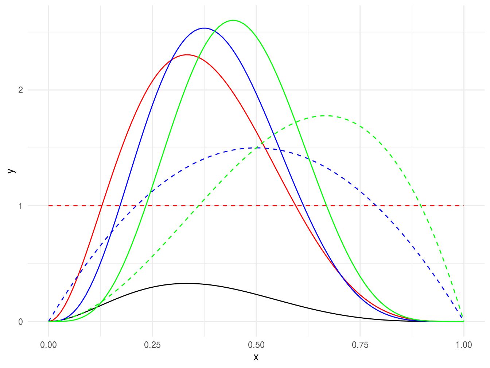
Note que a depender da distribuição a priori, a distribuição a posteriori apresenta diferentes formas e também diferentes estimativas, a depender da função de perda de interesse. Compare agora com a situação supondo que o experimento independente Bernoulli foi repetido mais vezes, i.e., \(n = 60\) e \(y = 20\), porém observando ainda a mesma proporção de sucessos.
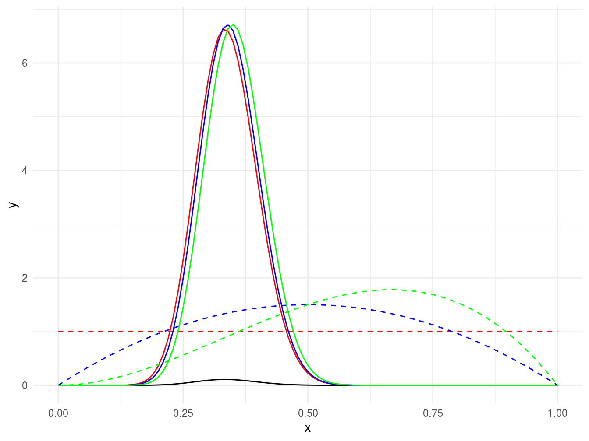
Note que conforme o número de repetições do experimento Bernoulli aumenta, a contribuição da distribuição a priori é menos relevante. Nesse segundo exemplo, as distribuições a posteriori tem forma muito próximas, o que indica que a inferência sobre o parâmetro \(p\) vai ter um peso muito maior da verossimilhança do que da distribuição a priori.
Quando consideramos o caso multinomial, uma vez que os parâmetros da distribuição são multivariados, temos que considerar uma outra distribuição a priori, que não a distribuição beta. Nesse caso, podemos utilizar a distribuição Dirichlet, que foi apresentada na seção anterior.
No caso binomial, vimos que as distribuições a priori e posteriori coincidiam: ambas têm distribuição beta. Quando isso, acontece dizemos que a distribuição é a família conjugada de distribuições para o modelo binomial. Podemos mostrar que no modelo multinomial, a distribuição Dirichlet é a respectiva família conjugada. A demonstração desse resultado fica como exercício, assim como ilustrações para diferentes valores de parâmetro.
1.4 Exercícios
- Considere um exame com 50 questões de múltipla escolha, com 5 alternativas em cada questão, em que apenas umas das opções está correta. Considere que uma pessoa responde de forma aleatória cada uma das questões e que suas respostas são independentes entre si.
- Defina variável aleatória \(X\) número de respostas certas ao final do exame. Descreva a distribuição de probabilidade de X.
- Calcule a probabilidade do número de acertos ser maior que a metade da prova. Se necessário, utilze alguma aproximação para fazer esse cálculo.
- Considere a variável aleatória ao final do curso de Estatística, em que os seus possíveis são “Aprovado”, “Reprovado por falta”, “Reprovado por nota”. Sejam \((N_1, N_2, N_3)\) as respectivas quantidades aleatórias em uma determinada turma. Suponha que esses valores ocorrem com probabilidade \((\pi_1, \pi_2, \pi_3)\). Considere uma turma com 3 pessoas com resultados independentes, em que as frequências observadas são \((n_1, n_2, n_3)\).
- Mostre que é possível obter \(n_3\) a partir de \(n_1\) e \(n_2\). Logo, discuta que a distribuição de probabilidade do vetor aleatório \((N_1, N_2, N_3)\) é na verdade bidimensional.
- Apresente o conjunto de todas as possibilidades das frequências observadas \((n_1, n_2, n_3)\) quando \(n = 3\).
- Suponha que \((\pi_1, \pi_2, \pi_3) = (0.70, 0.10, 0.20)\). Encontre a probabilidade utilizando a distribuição multinomial que \((N_1, N_2, N_3) = (2, 1, 0)\).
Escreva uma função no R para calcular a função de verossimilhança para o modelo multinomial trivariado. Gere 20 valores aleatórios dessa distribuição de probabilidade, fixando os valores dos parâmetros. Mostre que a função de verossimilhança recupera os valores dos parâmetros de maneira satisfatória para esses valores gerados. Compare com o caso em que 200 valores são gerados. O que esse resultado nos mostra?
Mostre que a distribuição Dirichlet faz parte da família conjugada para o modelo multinomial, i.e., mostre que a distribuição a posteriori dos parâmetros do modelo multinomial têm uma distribuição Dirichlet quando consideramos essa mesma distribuição para a distribuição a priori.
Considere novamente a variável aleatória do exercício 2. Agora tome que os valores observados são iguais a \((n_1, n_2, n_3) = (10, 3, 2)\). Considere uma distribuição a priori Dirichlet com parâmetros \(\boldsymbol \alpha = (1, 1, 1)\) e também \(\boldsymbol \alpha = (3, 2, 1)\). Compare os resultados da distribuição a posteriori para os dois casos. Verifique se existem diferenças se considerássemos os valores observados como \((n_1, n_2, n_3) = (50, 15, 10)\).